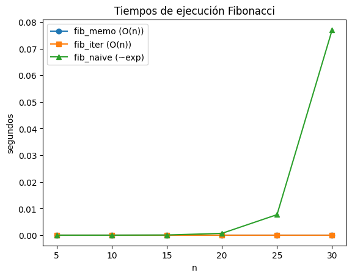
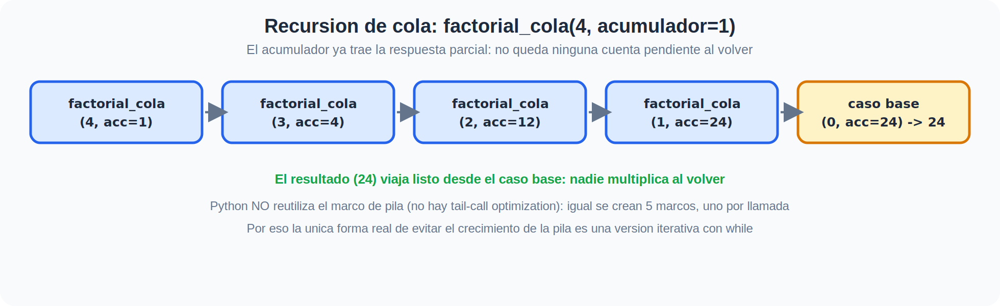
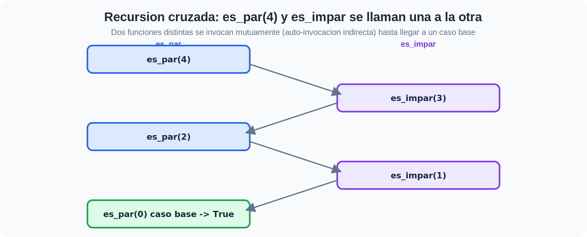

Recursividad en Python — Pila, Cola y Cruzada#
Curso: Técnicas de Programación · Unidad 2 Tema: Recursividad
Este notebook explica qué es la recursividad, la compara con la iteración, y desarrolla en profundidad sus tres formas: recursión de pila, recursión de cola y recursión cruzada. También cubre los patrones de diseño más comunes (Índice y Divide y Vencerás), los límites de recursión en Python, y ejemplos clásicos (memoización, recorridos de árboles), más ejercicios guiados. Búsqueda y backtracking se ven a fondo en la próxima sección de la unidad.
📎 Material de apoyo (teoría y plantillas): revisa primero la página Recursividad de esta unidad — tiene las diapositivas y el handout con más ejemplos y plantillas en blanco para practicar.
Contenidos#
Ejemplos básicos (patrón Índice)
Factorial (iterativo vs recursivo de pila)
Suma de lista (patrón Índice)
Fibonacci (naive, con memoización y versión iterativa)
1) ¿Qué es la recursividad?#
La recursividad es una técnica en la que una función se llama a sí misma para resolver un problema descomponiéndolo en subproblemas más pequeños pero de la misma forma. En esencia, el diseño incluye siempre:
Caso base (condición de parada): la forma más simple del problema que no hace llamadas recursivas.
Caso recursivo (reducción): una llamada a la misma función (o a otra función, en la recursión cruzada) con el problema más pequeño, que progresa hacia el caso base.
Piénsalo como muñecas rusas: vas abriendo versiones cada vez más pequeñas hasta llegar a la más simple.
2) Recursividad vs Iteración#
Iteración: usa bucles (
for,while) y variables de control explícitas.Recursividad: delega el “bucle” al call stack del intérprete, expresando el algoritmo de forma muy cercana a su definición matemática o estructural (p. ej., árboles).
Regla práctica: casi todo lo recursivo puede escribirse de forma iterativa; elegir uno u otro depende de claridad, legibilidad y eficiencia.
3) Estructura de una función recursiva (plantilla)#
Validación de entrada (opcional pero recomendable).
Caso base: retorna sin llamar de nuevo a la función.
Caso recursivo: llama a la función (o a otra, si es cruzada) con una versión más simple del problema y combina los resultados.
Es crítico garantizar la terminación: cada llamada debe acercarse al caso base.
4) Los tres tipos de recursión: pila, cola y cruzada#
Tipo |
Idea central |
¿Qué queda pendiente al volver? |
|---|---|---|
De pila |
Cada llamada espera el resultado de la siguiente para poder terminar su propia operación |
Una operación pendiente (multiplicar, sumar, concatenar…) — se van apilando marcos |
De cola |
La llamada recursiva es lo último que hace la función, y su resultado es el resultado final |
Nada: el acumulador ya trae la respuesta lista |
Cruzada |
Dos (o más) funciones distintas se llaman entre sí (auto-invocación indirecta) hasta llegar a un caso base |
Depende de cada función, pero el patrón es el mismo: caso base + progreso |
En las siguientes secciones vemos cada una con código y traza. Empezamos con recursión de pila, la más común y la que ya conoces de la sección de Fuerza Bruta de esta unidad.
5) Ejemplos básicos (recursión de pila, patrón Índice)#
Empezamos con factorial, el ejemplo clásico de recursión de pila: cada llamada debe esperar el resultado de n-1 antes
de poder multiplicar y retornar.
def factorial_iterativo(n: int) -> int:
"""Calcula n! de forma iterativa."""
if not isinstance(n, int):
raise TypeError("n debe ser entero")
if n < 0:
raise ValueError("El factorial no está definido para n negativos")
resultado = 1
for i in range(1, n + 1):
resultado *= i
return resultado
def factorial_pila(n: int) -> int:
"""Calcula n! de forma recursiva de PILA: la multiplicación por n queda pendiente
hasta que regresa la llamada de n-1."""
if not isinstance(n, int):
raise TypeError("n debe ser entero")
if n < 0:
raise ValueError("El factorial no está definido para n negativos")
if n in (0, 1): # Caso base
return 1
return n * factorial_pila(n - 1) # <- multiplicar por n queda PENDIENTE hasta que vuelva la llamada
# Pruebas rápidas
for k in range(6):
assert factorial_iterativo(k) == factorial_pila(k)
print("OK: factorial iterativo y recursivo (de pila) producen el mismo resultado para k=0..5")
OK: factorial iterativo y recursivo (de pila) producen el mismo resultado para k=0..5
Patrón ÍNDICE: suma_lista#
Este patrón recorre una estructura avanzando un índice (o “cortando” la lista con xs[1:]) hasta un caso base, y combina el
resultado al volver. Aquí mostramos la versión de pila (suma_lista_pila, con una suma pendiente) junto a una primera
aproximación de cola (suma_lista_cola, con un acumulador) — la profundizamos en la siguiente sección.
def suma_lista_pila(xs):
"""Patrón ÍNDICE, recursión DE PILA: la suma con xs[0] queda pendiente."""
if not xs: # Caso base: lista vacía
return 0
return xs[0] + suma_lista_pila(xs[1:]) # <- suma pendiente hasta que vuelve la llamada
def suma_lista_cola(xs, acumulador=0):
"""Patrón ÍNDICE, recursión DE COLA: el acumulador ya lleva la respuesta parcial,
no queda ninguna operación pendiente al volver."""
if not xs: # Caso base
return acumulador
return suma_lista_cola(xs[1:], acumulador + xs[0]) # <- la llamada recursiva ES el resultado final
datos = [1, 2, 3, 4, 5]
print("suma_lista_pila:", suma_lista_pila(datos))
print("suma_lista_cola:", suma_lista_cola(datos))
suma_lista_pila: 15
suma_lista_cola: 15
from functools import lru_cache
def fib_naive(n: int) -> int:
"""Versión recursiva ingenua (de pila): O(phi^n) tiempo aprox, por recomputación."""
if n < 2:
return n
return fib_naive(n-1) + fib_naive(n-2)
@lru_cache(maxsize=None)
def fib_memo(n: int) -> int:
"""Recursión con memoización (Top-Down). Tiempo O(n), espacio O(n)."""
if n < 2:
return n
return fib_memo(n-1) + fib_memo(n-2)
def fib_iter(n: int) -> int:
"""Versión iterativa (Bottom-Up). Tiempo O(n), espacio O(1)."""
if n < 2:
return n
a, b = 0, 1
for _ in range(2, n+1):
a, b = b, a + b
return b
# Pruebas equivalentes
for n in range(20):
assert fib_memo(n) == fib_iter(n)
print("OK: fib_memo y fib_iter coinciden para n=0..19")
OK: fib_memo y fib_iter coinciden para n=0..19
Comparación de desempeño en Fibonacci#
Medimos tiempo de ejecución de fib_naive, fib_memo y fib_iter para valores crecientes de n.
Nota: No se especifican estilos ni colores para cumplir con la guía de gráficos.
import time
import matplotlib.pyplot as plt
def medir_tiempo(fn, n):
t0 = time.perf_counter()
_ = fn(n)
t1 = time.perf_counter()
return t1 - t0
ns = list(range(5, 31, 5))
tiempos_naive = []
tiempos_memo = []
tiempos_iter = []
# Evitamos que el cache sesgue las primeras mediciones
fib_memo.cache_clear()
for n in ns:
# Medimos varias veces para estabilizar
repeticiones = 3
t_naive = sum(medir_tiempo(fib_naive, n) for _ in range(repeticiones)) / repeticiones if n <= 35 else float('nan')
t_memo = sum(medir_tiempo(fib_memo, n) for _ in range(repeticiones)) / repeticiones
t_iter = sum(medir_tiempo(fib_iter, n) for _ in range(repeticiones)) / repeticiones
tiempos_naive.append(t_naive)
tiempos_memo.append(t_memo)
tiempos_iter.append(t_iter)
plt.figure()
plt.plot(ns, tiempos_memo, marker='o', label='fib_memo (O(n))')
plt.plot(ns, tiempos_iter, marker='s', label='fib_iter (O(n))')
# Para naive, puede crecer rápido; mostramos si está disponible
import math
if not all(math.isnan(x) for x in tiempos_naive):
plt.plot(ns, tiempos_naive, marker='^', label='fib_naive (~exp)')
plt.xlabel("n")
plt.ylabel("segundos")
plt.title("Tiempos de ejecución Fibonacci")
plt.legend()
plt.show()

6) Recursión de cola en profundidad: transformar pila → cola#

Una llamada es de cola cuando la llamada recursiva es lo último que hace la función — no hay ninguna operación pendiente después de ella. Eso la hace, en teoría, optimizable (el intérprete podría reusar el marco de pila). Python no hace esa optimización (no hay tail-call optimization), así que una recursión de cola sigue creando un marco por llamada y puede agotar el límite de recursión igual que una de pila — la ventaja real es de claridad, no de memoria, salvo que la conviertas en un bucle.
Transformación en 5 pasos (de pila a cola)#
Identifica la operación pendiente en la versión de pila (ej.
n * factorial_pila(n-1)).Agrega un parámetro acumulador con un valor inicial neutro para esa operación (
1para producto,0para suma).Actualiza el acumulador antes de la llamada recursiva, aplicando la operación pendiente sobre él (
acumulador * n).Haz que la llamada recursiva sea el
return, sin nada más alrededor.El caso base retorna el acumulador directamente — ya es la respuesta.
De cola a iterativo (el paso final)#
Como Python no optimiza la cola, el único beneficio real en memoria es convertir la recursión de cola en un bucle while:
el acumulador de la versión de cola se vuelve, casi literalmente, la variable que actualiza el bucle.
def factorial_pila(n):
if n in (0, 1):
return 1
return n * factorial_pila(n - 1) # operación pendiente: multiplicar por n
def factorial_cola(n, acumulador=1):
if n in (0, 1):
return acumulador # el acumulador YA es la respuesta
return factorial_cola(n - 1, acumulador * n) # último paso: nada pendiente después
def factorial_iterativo_desde_cola(n):
"""El acumulador de factorial_cola se vuelve la variable del bucle."""
acumulador = 1
while n > 1:
acumulador *= n
n -= 1
return acumulador
for k in range(8):
assert factorial_pila(k) == factorial_cola(k) == factorial_iterativo_desde_cola(k)
print("OK: las tres versiones (pila, cola, iterativa) coinciden para k=0..7")
# Prueba de que Python NO optimiza la cola: ambas formas agotan la pila con el mismo N aprox.
import sys
limite = sys.getrecursionlimit()
n_grande = limite + 50
try:
factorial_cola(n_grande)
print("No debería llegar aquí")
except RecursionError:
print(f"RecursionError con n={n_grande}: la version de cola tambien crea un marco por llamada")
OK: las tres versiones (pila, cola, iterativa) coinciden para k=0..7
RecursionError con n=1050: la version de cola tambien crea un marco por llamada
7) Límites de recursión en Python#
Python protege contra desbordamientos de pila con un límite de recursión. Puedes consultarlo, y con cuidado, ajustarlo.
import sys
print("Límite actual:", sys.getrecursionlimit())
def rec_sin_fin(n):
return rec_sin_fin(n + 1)
try:
rec_sin_fin(0)
except RecursionError as e:
print("Atrapado un RecursionError real:", e)
# ¡Usar con precaución! Subir el límite no arregla una recursión mal diseñada,
# solo pospone el problema y puede colgar el intérprete en casos extremos.
# sys.setrecursionlimit(3000)
Límite actual: 1000
Atrapado un RecursionError real: maximum recursion depth exceeded
8) Recursión cruzada (auto-invocación indirecta)#

En la recursión cruzada (o mutua), una función A llama a una función B, y B vuelve a llamar a A — ninguna se
llama directamente a sí misma, pero la cadena de llamadas sigue creciendo (y reduciéndose) igual que en una recursión normal.
Es el mismo contrato de siempre: cada función necesita su propio caso base, y cada llamada debe progresar hacia él.
Aparece de forma natural en parsers (una función que reconoce expresiones llama a otra que reconoce términos, que llama de vuelta a la de expresiones) y en máquinas de estados implementadas con funciones.
def es_par(n):
"""Caso base: 0 es par. Si no, pregunta si n-1 es impar (llamando a OTRA función)."""
if n == 0:
return True
return es_impar(n - 1)
def es_impar(n):
"""Caso base: 0 no es impar. Si no, pregunta si n-1 es par (llamando a OTRA función)."""
if n == 0:
return False
return es_par(n - 1)
for n in range(10):
assert es_par(n) == (n % 2 == 0)
assert es_impar(n) == (n % 2 == 1)
print("OK: es_par/es_impar (recursion cruzada) coinciden con el operador % para n=0..9")
print("es_par(4) ->", es_par(4), " | es_impar(7) ->", es_impar(7))
OK: es_par/es_impar (recursion cruzada) coinciden con el operador % para n=0..9
es_par(4) -> True | es_impar(7) -> True
9) Divide y vencerás: potencia rápida (exponentiación binaria)#
Patrón DIVIDE Y VENCERÁS#
Este patrón parte el problema en subproblemas independientes, resuelve el subproblema y combina el resultado. Para calcular
a**n no hace falta multiplicar a por sí mismo n veces: si n es par, a**n = (a**(n//2))**2, y si es impar,
a**n = a * a**(n-1). Cada llamada parte el exponente a la mitad, así que en vez de n llamadas necesitamos solo
O(log n).
Nota: la búsqueda binaria y el backtracking (Torres de Hanoi, generación de subconjuntos, N-Reinas) también son ejemplos naturales de estos patrones — los vas a ver a fondo en la próxima sección de la unidad, dedicada a búsqueda y backtracking.
def potencia_dyc(a, n):
"""Calcula a**n con exponenciacion rapida (divide y venceras). n entero >= 0."""
if n == 0: # Caso base
return 1
mitad = potencia_dyc(a, n // 2) # subproblema: parte el exponente a la mitad
if n % 2 == 0:
return mitad * mitad # combinar: n par
else:
return a * mitad * mitad # combinar: n impar
for base in (2, 3, 5):
for exp in range(6):
assert potencia_dyc(base, exp) == base ** exp
print("OK: potencia_dyc coincide con ** para bases 2,3,5 y exponentes 0..5")
print("potencia_dyc(2, 10) ->", potencia_dyc(2, 10))
OK: potencia_dyc coincide con ** para bases 2,3,5 y exponentes 0..5
potencia_dyc(2, 10) -> 1024
10) Recorridos de árboles binarios (pre/in/post-orden)#
Las estructuras jerárquicas se describen naturalmente con recursividad de pila: cada llamada combina lo que retornan sus dos hijos.
class Nodo:
def __init__(self, valor, izq=None, der=None):
self.valor = valor
self.izq = izq
self.der = der
def preorden(nodo):
if nodo is None: return []
return [nodo.valor] + preorden(nodo.izq) + preorden(nodo.der)
def inorden(nodo):
if nodo is None: return []
return inorden(nodo.izq) + [nodo.valor] + inorden(nodo.der)
def postorden(nodo):
if nodo is None: return []
return postorden(nodo.izq) + postorden(nodo.der) + [nodo.valor]
# Árbol de ejemplo
# 4
# / \
# 2 6
# / \ / \
# 1 3 5 7
tree = Nodo(4,
Nodo(2, Nodo(1), Nodo(3)),
Nodo(6, Nodo(5), Nodo(7)))
print("Preorden: ", preorden(tree))
print("Inorden: ", inorden(tree))
print("Postorden: ", postorden(tree))
Preorden: [4, 2, 1, 3, 6, 5, 7]
Inorden: [1, 2, 3, 4, 5, 6, 7]
Postorden: [1, 3, 2, 5, 7, 6, 4]
11) Programación dinámica: Top-Down (memoización) vs Bottom-Up#
La recursión combinada con memoización evita recomputaciones; la alternativa iterativa Bottom-Up construye la solución desde los casos base. Ya lo vimos con Fibonacci; otro ejemplo ilustrativo es el cambio de monedas.
from functools import lru_cache
def cambio_minimo_bottom_up(valor, monedas):
"""Número mínimo de monedas para alcanzar 'valor'. Bottom-Up (iterativo)."""
INF = 10**9
dp = [0] + [INF]*valor
for v in range(1, valor+1):
for m in monedas:
if m <= v:
dp[v] = min(dp[v], 1 + dp[v-m])
return dp[valor] if dp[valor] < INF else None
@lru_cache(maxsize=None)
def cambio_minimo_top_down(valor, monedas_tuple):
"""Top-Down (recursivo con memo). monedas_tuple para permitir cache."""
if valor == 0:
return 0
INF = 10**9
ans = INF
for m in monedas_tuple:
if m <= valor:
sub = cambio_minimo_top_down(valor - m, monedas_tuple)
if sub is not None:
ans = min(ans, 1 + sub)
return ans if ans < INF else None
monedas = (1, 3, 4)
v = 6
print("Bottom-Up:", cambio_minimo_bottom_up(v, list(monedas)))
cambio_minimo_top_down.cache_clear()
print("Top-Down :", cambio_minimo_top_down(v, monedas))
Bottom-Up: 2
Top-Down : 2
12) Bonus: visualiza el árbol de llamadas con un decorador#
Este pequeño decorador imprime cada llamada con sangría según su profundidad, y su retorno al volver — útil para ver el árbol de llamadas de cualquier función recursiva sin dibujarlo a mano.
from functools import wraps
def trace(fn):
def indent(depth):
return '│ ' * (depth - 1) + ('├─ ' if depth > 0 else '')
@wraps(fn)
def wrapper(*args, **kwargs):
depth = wrapper.depth
print(f"{indent(depth)}{fn.__name__}{args}")
wrapper.depth += 1
res = fn(*args, **kwargs)
wrapper.depth -= 1
print(f"{indent(depth)}-> {res}")
return res
wrapper.depth = 0
return wrapper
@trace
def suma_trazada(a, i=0):
if i == len(a):
return 0
return a[i] + suma_trazada(a, i + 1)
suma_trazada([2, 4, 1])
suma_trazada([2, 4, 1],)
├─ suma_trazada([2, 4, 1], 1)
│ ├─ suma_trazada([2, 4, 1], 2)
│ │ ├─ suma_trazada([2, 4, 1], 3)
│ │ ├─ -> 0
│ ├─ -> 1
├─ -> 5
-> 7
7
13) Ejercicios propuestos (con plantillas)#
A) Invertir una lista recursivamente#
Implementa una función que retorne una nueva lista invertida usando recursión.
def invertir(xs):
# TODO
...
B) Profundidad máxima de un árbol binario#
Dado un
Nodo(como en la sección de árboles), calcula la altura del árbol.
def altura(nodo):
# TODO
...
C) Convierte suma_lista_pila a una versión de cola con acumulador#
Sigue la transformación en 5 pasos de la sección 6 y verifica que ambas versiones coinciden.
D) Recursión cruzada: es_multiplo_de_3 / resto_de_3#
Escribe dos funciones que se llamen mutuamente para calcular
n % 3sin usar el operador%(usa restas de a uno).
E) Divide y vencerás: potencia_dyc con exponente negativo#
Extiende
potencia_dyc(a, n)para que aceptennegativo, devolviendo1 / a**abs(n).
14) Apéndice: consejos, errores frecuentes y material de apoyo#
Consejos
Define primero el caso base, luego el caso recursivo (o los casos recursivos, si es cruzada).
Verifica progresión hacia el caso base (evita recursión infinita).
Entrada válida: valida tipos y rangos cuando sea pertinente.
Cuidado con Python y recursión de cola: Python no hace tail-call optimization — una recursión de cola sigue gastando un marco de pila por llamada.
Límites de recursión: consulta/ajusta con
sys.getrecursionlimit()ysys.setrecursionlimit()con prudencia.Perfílalo: si una recursión es lenta por recomputación, usa memoización o considera una versión iterativa.
Errores frecuentes
Olvidar el caso base, o tenerlo inalcanzable.
No avanzar hacia el caso base (un parámetro que no cambia).
Modificar listas en sitio sin control (usa copias, o deshaz un
appendconpop()si acumulas sobre una sola lista compartida).Mezclar retornos y efectos secundarios (decide si la función devuelve o imprime/guarda).
No probar con casos vacío y de tamaño 1.
Material de apoyo (teoría completa y plantillas en blanco)
Con práctica, podrás identificar problemas naturalmente recursivos (árboles, divide y vencerás) y elegir con criterio entre recursión de pila, de cola o cruzada — y saber cuándo conviene pasarlos a una versión iterativa. La próxima sección de la unidad retoma estos mismos patrones para búsqueda y backtracking.